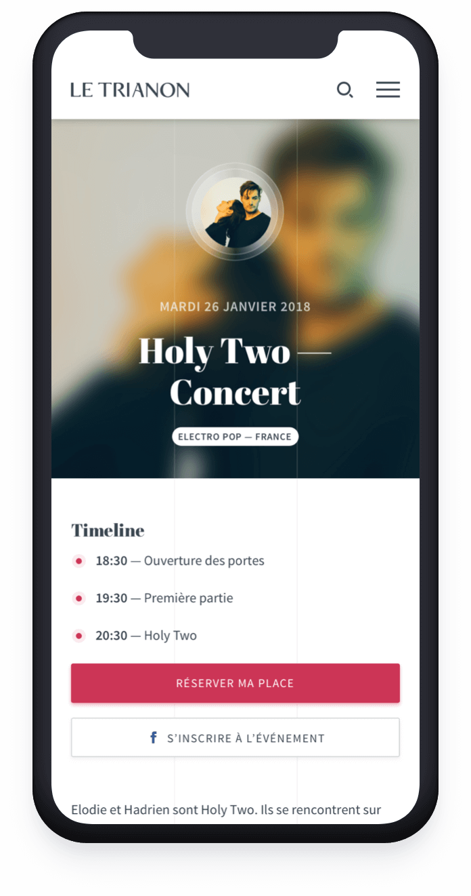
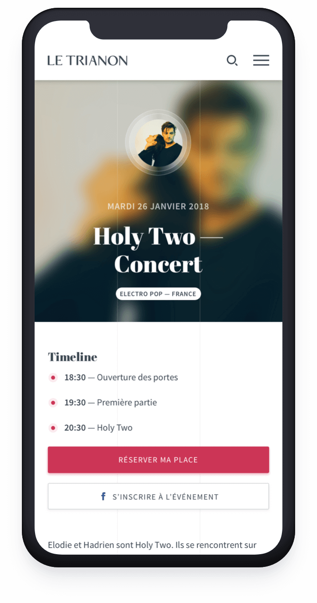

Titre du projet
Date • Type de projet
Présentation
Lors d'un projet universitaire, nous devions réaliser la refonte du site de notre choix. Passionnée par la musique et les concerts, j'ai alors opté pour le site du Trianon, salle de spectacle parisienne située au pied de la butte Montmartre. Le site n'étant que trop peu ergonomique, le choix fut évident.
Page d'accueil
La page d'accueil est celle que j'ai le plus réorganiser. Dans l'actuelle, tout est mélangé et il est compliqué de savoir ce qui était cliquable ou non. Je me suis appuyée sur les éléments existants (les têtes d'affiche, la programmation, la newsletter, les réseaux sociaux) et y ai inclus des nouveaux.
Têtes d’affiche
Sélection des artistes les plus connus, sous forme de slider.
Artistes à l'affiche
Les 6 prochains artistes à venir, avec un CTA vers la programmation complète.
Histoire du Trianon
Mise en avant historique du Trianon, avec une description retraçant son histoire.
Newsletter
Formulaire d’inscription à la Newsletter.
Privatisation
Présentation des trois salles privatisables, avec un lien vers la page de « Événements » pour plus d’informations.
Réseaux sociaux
Mise en avant des derniers posts sur les réseaux sociaux.
Infos pratiques
Regroupement des informations pratiques concernant le Trianon.
Page de programmation et artiste
La principale nouveauté dans la page de programmation est le champ de recherche ainsi que les filtres pour une recherche plus efficace. J'y ai également ajouté les informations pratiques. Concernant la page des musiciens, le contenu est beaucoup plus complet pour en savoir plus sur l'univers musical de l'artiste (leurs réseaux sociaux, dernier clip, sélection de 3 titres et liens vers leur page Spotify). Le lien de l'évènement Facebook a également été ajouté.
Flow d’achat de ticket
Pour ce projet, j'ai totalement revu le système de réservation et d'achat de tickets, notamment en y ajoutant une interface interactive de la salle pour le choix de sa place.
Page des évévements
Le Trianon propose trois espaces privatisables, la salle de bal ou foyer, le jardin d’hiver et le théâtre. Cette nouvelle organisation permet l'affichage de toutes les informations nécessaires sans profondeur peu utile.
Page des archives et contact
La page des archives, tout comme la page de programmation, a été améliorée grâce à l'ajout de filtres pour la recherche, en plus du remaniement graphique. Seule la page contact reste inchangée en termes de contenu.
Responsive : un site adapté à tous les écrans
 
